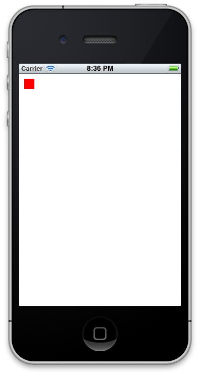
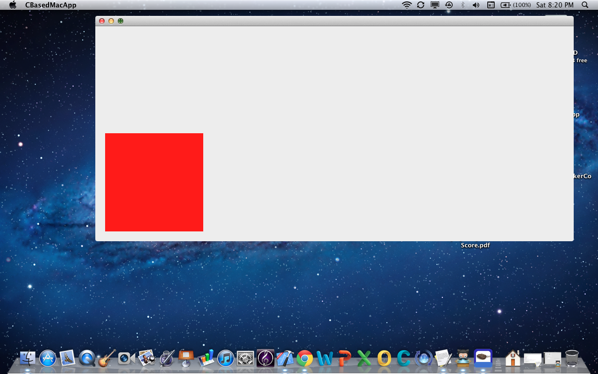

I read here Learn C Before Objective-C?
Usually I then replace some Obj-C code with pure C code (after all you can
mix them as much as you like, the content of an Obj-C method can be
entirely, pure C code)
Is this true?
Is it possible to build an iPhone app purely in the C programming language?
Answer
Damn, it took me a while but I got it:
main.c:
#include <CoreFoundation/CoreFoundation.h>
#include <objc/runtime.h>
#include <objc/message.h>
// This is a hack. Because we are writing in C, we cannot out and include
// <UIKit/UIKit.h>, as that uses Objective-C constructs.
// however, neither can we give the full function declaration, like this:
// int UIApplicationMain (int argc, char *argv[], NSString *principalClassName, NSString *delegateClassName);
// So, we rely on the fact that for both the i386 & ARM architectures,
// the registers for parameters passed in remain the same whether or not
// you are using VA_ARGS. This is actually the basis of the objective-c
// runtime (objc_msgSend), so we are probably fine here, this would be
// the last thing I would expect to break.
extern int UIApplicationMain(int, ...);
// Entry point of the application. If you don't know what this is by now,
// then you probably shouldn't be reading the rest of this post.
int main(int argc, char *argv[])
{
// Create an @autoreleasepool, using the old-stye API.
// Note that while NSAutoreleasePool IS deprecated, it still exists
// in the APIs for a reason, and we leverage that here. In a perfect
// world we wouldn't have to worry about this, but, remember, this is C.
id autoreleasePool = objc_msgSend(objc_msgSend(objc_getClass("NSAutoreleasePool"), sel_registerName("alloc")), sel_registerName("init"));
// Notice the use of CFSTR here. We cannot use an objective-c string
// literal @"someStr", as that would be using objective-c, obviously.
UIApplicationMain(argc, argv, nil, CFSTR("AppDelegate"));
objc_msgSend(autoreleasePool, sel_registerName("drain"));
}
AppDelegate.c:
#import <objc/runtime.h>
#import <objc/message.h>
// This is equivalent to creating a @class with one public variable named 'window'.
struct AppDel
{
Class isa;
id window;
};
// This is a strong reference to the class of the AppDelegate
// (same as [AppDelegate class])
Class AppDelClass;
// this is the entry point of the application, same as -application:didFinishLaunchingWithOptions:
// note the fact that we use `void *` for the 'application' and 'options' fields, as we need no reference to them for this to work. A generic id would suffice here as well.
BOOL AppDel_didFinishLaunching(struct AppDel *self, SEL _cmd, void *application, void *options)
{
// we +alloc and -initWithFrame: our window here, so that we can have it show on screen (eventually).
// this entire method is the objc-runtime based version of the standard View-Based application's launch code, so nothing here really should surprise you.
// one thing important to note, though is that we use `sel_getUid()` instead of @selector().
// this is because @selector is an objc language construct, and the application would not have been created in C if I used @selector.
self->window = objc_msgSend(objc_getClass("UIWindow"), sel_getUid("alloc"));
self->window = objc_msgSend(self->window, sel_getUid("initWithFrame:"), (struct CGRect) { 0, 0, 320, 480 });
// here, we are creating our view controller, and our view. note the use of objc_getClass, because we cannot reference UIViewController directly in C.
id viewController = objc_msgSend(objc_msgSend(objc_getClass("UIViewController"), sel_getUid("alloc")), sel_getUid("init"));
// creating our custom view class, there really isn't too much
// to say here other than we are hard-coding the screen's bounds,
// because returning a struct from a `objc_msgSend()` (via
// [[UIScreen mainScreen] bounds]) requires a different function call
// and is finicky at best.
id view = objc_msgSend(objc_msgSend(objc_getClass("View"), sel_getUid("alloc")), sel_getUid("initWithFrame:"), (struct CGRect) { 0, 0, 320, 480 });
// here we simply add the view to the view controller, and add the viewController to the window.
objc_msgSend(objc_msgSend(viewController, sel_getUid("view")), sel_getUid("addSubview:"), view);
objc_msgSend(self->window, sel_getUid("setRootViewController:"), viewController);
// finally, we display the window on-screen.
objc_msgSend(self->window, sel_getUid("makeKeyAndVisible"));
return YES;
}
// note the use of the gcc attribute extension (constructor).
// Basically, this lets us run arbitrary code before program startup,
// for more information read here: http://stackoverflow.com/questions/2053029
__attribute__((constructor))
static void initAppDel()
{
// This is objc-runtime gibberish at best. We are creating a class with the
// name "AppDelegate" that is a subclass of "UIResponder". Note we do not need
// to register for the UIApplicationDelegate protocol, that really is simply for
// Xcode's autocomplete, we just need to implement the method and we are golden.
AppDelClass = objc_allocateClassPair(objc_getClass("UIResponder"), "AppDelegate", 0);
// Here, we tell the objc runtime that we have a variable named "window" of type 'id'
class_addIvar(AppDelClass, "window", sizeof(id), 0, "@");
// We tell the objc-runtime that we have an implementation for the method
// -application:didFinishLaunchingWithOptions:, and link that to our custom
// function defined above. Notice the final parameter. This tells the runtime
// the types of arguments received by the function.
class_addMethod(AppDelClass, sel_getUid("application:didFinishLaunchingWithOptions:"), (IMP) AppDel_didFinishLaunching, "i@:@@");
// Finally we tell the runtime that we have finished describing the class and
// we can let the rest of the application use it.
objc_registerClassPair(AppDelClass);
}
View.c
#include <objc/runtime.h>
// This is a strong reference to the class of our custom view,
// In case we need it in the future.
Class ViewClass;
// This is a simple -drawRect implementation for our class. We could have
// used a UILabel or something of that sort instead, but I felt that this
// stuck with the C-based mentality of the application.
void View_drawRect(id self, SEL _cmd, struct CGRect rect)
{
// We are simply getting the graphics context of the current view,
// so we can draw to it
CGContextRef context = UIGraphicsGetCurrentContext();
// Then we set it's fill color to white so that we clear the background.
// Note the cast to (CGFloat []). Otherwise, this would give a warning
// saying "invalid cast from type 'int' to 'CGFloat *', or
// 'extra elements in initializer'. Also note the assumption of RGBA.
// If this wasn't a demo application, I would strongly recommend against this,
// but for the most part you can be pretty sure that this is a safe move
// in an iOS application.
CGContextSetFillColor(context, (CGFloat []){ 1, 1, 1, 1 });
// here, we simply add and draw the rect to the screen
CGContextAddRect(context, (struct CGRect) { 0, 0, 320, 480 });
CGContextFillPath(context);
// and we now set the drawing color to red, then add another rectangle
// and draw to the screen
CGContextSetFillColor(context, (CGFloat []) { 1, 0, 0, 1 });
CGContextAddRect(context, (struct CGRect) { 10, 10, 20, 20 });
CGContextFillPath(context);
}
// Once again we use the (constructor) attribute. generally speaking,
// having many of these is a very bad idea, but in a small application
// like this, it really shouldn't be that big of an issue.
__attribute__((constructor))
static void initView()
{
// Once again, just like the app delegate, we tell the runtime to
// create a new class, this time a subclass of 'UIView' and named 'View'.
ViewClass = objc_allocateClassPair(objc_getClass("UIView"), "View", 0);
// and again, we tell the runtime to add a function called -drawRect:
// to our custom view. Note that there is an error in the type-specification
// of this method, as I do not know the @encode sequence of 'CGRect' off
// of the top of my head. As a result, there is a chance that the rect
// parameter of the method may not get passed properly.
class_addMethod(ViewClass, sel_getUid("drawRect:"), (IMP) View_drawRect, "v@:");
// And again, we tell the runtime that this class is now valid to be used.
// At this point, the application should run and display the screenshot shown below.
objc_registerClassPair(ViewClass);
}
It's ugly, but it works.
If you would like to download this, you can get it from my dropbox here
You can get it from my GitHub repository here:

Suggest
Objective-C is a superset of the C-language, so it is theoretically possible
to write a program entirely in C, however, unless you are thoroughly versed in
OpenGL ES, You'll need to do at least some objC ( Even Rich's sample
has a const NSString* in it ), else you'll have to write the views yourself.
OK, the above is completely wrong. Let me say, I'm astounded Rich achieved
this lofty goal, so I ported it over to the mac (source here). The files below
have no headers, do not link to Cocoa, nor does the project have a nib:
AppDelegate.m
#include <objc/runtime.h>
#include <objc/message.h>
extern id NSApp;
struct AppDel
{
Class isa;
//Will be an NSWindow later, for now, it's id, because we cannot use pointers to ObjC classes
id window;
};
// This is a strong reference to the class of the AppDelegate
// (same as [AppDelegate class])
Class AppDelClass;
BOOL AppDel_didFinishLaunching(struct AppDel *self, SEL _cmd, id notification) {
//alloc NSWindow
self->window = objc_msgSend(objc_getClass("NSWindow"),
sel_getUid("alloc"));
//init NSWindow
//Adjust frame. Window would be about 50*50 px without this
//specify window type. We want a resizeable window that we can close.
//use retained backing because this thing is small anyhow
//return no because this is the main window, and should be shown immediately
self->window = objc_msgSend(self->window,
sel_getUid("initWithContentRect:styleMask:backing:defer:"),(NSRect){0,0,1024,460}, (NSTitledWindowMask|NSClosableWindowMask|NSResizableWindowMask|NSMiniaturizableWindowMask),NSBackingStoreRetained,NO);
//send alloc and init to our view class. Love the nested objc_msgSends!
id view = objc_msgSend(objc_msgSend(objc_getClass("View"), sel_getUid("alloc")), sel_getUid("initWithFrame:"), (struct CGRect) { 0, 0, 320, 480 });
// here we simply add the view to the window.
objc_msgSend(self->window, sel_getUid("setContentView:"), view);
objc_msgSend(self->window, sel_getUid("becomeFirstResponder"));
//makeKeyOrderFront: NSWindow to show in bottom left corner of the screen
objc_msgSend(self->window,
sel_getUid("makeKeyAndOrderFront:"),
self);
return YES;
}
static void initAppDel()
{
//Our appDelegate should be NSObject, but if you want to go the hard route, make this a class pair of NSApplication and try initing those awful delegate methods!
AppDelClass = objc_allocateClassPair((Class)
objc_getClass("NSObject"), "AppDelegate", 0);
//Change the implementation of applicationDidFinishLaunching: so we don't have to use ObjC when this is called by the system.
class_addMethod(AppDelClass,
sel_getUid("applicationDidFinishLaunching:"),
(IMP) AppDel_didFinishLaunching, "i@:@");
objc_registerClassPair(AppDelClass);
}
void init_app(void)
{
objc_msgSend(
objc_getClass("NSApplication"),
sel_getUid("sharedApplication"));
if (NSApp == NULL)
{
fprintf(stderr,"Failed to initialized NSApplication... terminating...\n");
return;
}
id appDelObj = objc_msgSend(
objc_getClass("AppDelegate"),
sel_getUid("alloc"));
appDelObj = objc_msgSend(appDelObj, sel_getUid("init"));
objc_msgSend(NSApp, sel_getUid("setDelegate:"), appDelObj);
objc_msgSend(NSApp, sel_getUid("run"));
}
//there doesn't need to be a main.m because of this little beauty here.
int main(int argc, char** argv)
{
//Initialize a valid app delegate object just like [NSApplication sharedApplication];
initAppDel();
//Initialize the run loop, just like [NSApp run]; this function NEVER returns until the app closes successfully.
init_app();
//We should close acceptably.
return EXIT_SUCCESS;
}
View.m
#include <objc/runtime.h>
#include <objc/message.h>
#include <ApplicationServices/ApplicationServices.h>
// This is a strong reference to the class of our custom view,
// In case we need it in the future.
Class ViewClass;
// This is a simple -drawRect implementation for our class. We could have
// used a UILabel or something of that sort instead, but I felt that this
// stuck with the C-based mentality of the application.
void View_drawRect(id self, SEL _cmd, CGRect rect)
{
//make a red NSColor object with its convenience method
id red = objc_msgSend(objc_getClass("NSColor"), sel_getUid("redColor"));
// fill target rect with red, because this is it!
NSRect rect1 = NSMakeRect ( 21,21,210,210 );
objc_msgSend(red, sel_getUid("set"));
NSRectFill ( rect1 );
}
// Once again we use the (constructor) attribute. generally speaking,
// having many of these is a very bad idea, but in a small application
// like this, it really shouldn't be that big of an issue.
__attribute__((constructor))
static void initView()
{
// Once again, just like the app delegate, we tell the runtime to
// create a new class, this time a subclass of 'UIView' and named 'View'.
ViewClass = objc_allocateClassPair((Class) objc_getClass("NSView"), "View", 0);
// and again, we tell the runtime to add a function called -drawRect:
// to our custom view. Note that there is an error in the type-specification
// of this method, as I do not know the @encode sequence of 'CGRect' off
// of the top of my head. As a result, there is a chance that the rect
// parameter of the method may not get passed properly.
class_addMethod(ViewClass, sel_getUid("drawRect:"), (IMP) View_drawRect, "v@:");
// And again, we tell the runtime that this class is now valid to be used.
// At this point, the application should run and display the screenshot shown below.
objc_registerClassPair(ViewClass);
}
prefix.pch
//
// Prefix header for all source files of the 'CBasedMacApp' target in the 'CBasedMacApp' project
//
#ifdef __OBJC__
#import <Foundation/Foundation.h>
#import <AppKit/AppKit.h>
#endif
